5．一些未解决的问题
对几何的批判性研究超出了重建几何基础的范围。曲线自然是随便地使用着的。比较简单的一些曲线（比如椭圆）有牢靠的几何和分析的定义。但是很多曲线只是通过方程和函数引进的。分析的严密化不仅仅包括了函数概念的扩大，而且还包括构造一些非常特殊的函数，例如没有导数的连续函数。显而易见，这些不寻常的函数从几何观点看来是麻烦的。例如表示魏尔斯特拉斯的例子的函数曲线（它处处连续而无处可微）确实不适合于通常的函数概念，因为没有导数就意味着这条曲线在任何一点都没有切线。问题就产生了，这种函数的几何表示形式是曲线吗？更一般地说，一条曲线究竟是什么呢？
若尔当作出了曲线的一个定义(21)。它是由连续函数
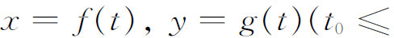
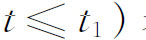
表示的点的集合。为了某种目的，若尔当想限制他的曲线使之没有多重点。因此他要求对于（t0，t1）中的t和t′，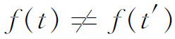
或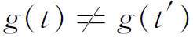
，或者对于每一个（x，y），只存在一个t。这种曲线现在称为若尔当曲线。正是在这本书中，他增加了闭曲线的概念(22)，它要求
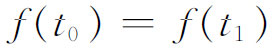
和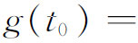
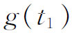
，而且还叙述了闭曲线把平面分成两部分（内部和外部）的定理。同一区域上的两个点总可以用一条与这曲线不相交的折线连接起来。不在同一区域内的两个点不可能用任何一条与这简单闭曲线不相交的折线或连续曲线连接起来。这一定理的力量比乍一看所感觉到的力量要大得多，因为简单闭曲线完全可以是奇形怪状的。实际上，因为函数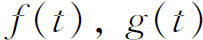
仅仅要求是连续的，所以复杂连续函数的所有种类都包括进去了。若尔当本人和许多杰出的数学家做出了这条定理的不正确的证明。第一个严密的证明是属于维布伦的(23)。若尔当的曲线定义，虽然满足了许多用途，但它毕竟是太广了。1890年，皮亚诺(24)发现符合若尔当定义的曲线能跑遍一个正方形上的所有点，每个点至少经过一次。皮亚诺对区间［0，1］上的点和正方形上的点的对应做出了详细的算术描述。实际上，正方形上的这些点对于0≤t≤1，可规定两个单值连续函数x＝f（t）和y＝g（t），使得x和y取属于单位正方形的每一个点的值。但是，（x，y）和t的对应既不是单值的，又不是连续的。从t值到（x，y）值的一个一对一的连续对应是不可能有的；也就是说，f（t）和g（t）不能都是连续的。这是由内托（Eugen E．Netto，1846—1919）证明的(25)。
皮亚诺曲线的几何解释是由舍恩弗利斯（Arthur M．Schoenflies，1853—1928）(26)和穆尔(27)做出的。先把线段［0，1］映射到如图42.3所示的九条线段，然后在每一个小正方形内把包含在内部的线段分成相同的样式，但使这种分法从一个小正方形到下一个小正方形的过渡是连续的。这个过程重复无穷遍，极限点集就覆盖了原正方形。塞萨罗（Ernesto Cesàro，1859—1906）(28)给出了皮亚诺的f和g的解析形式。
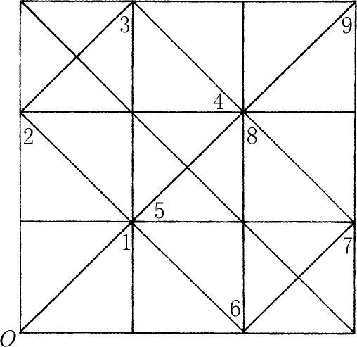
图42.3
希尔伯特(29)作出了从单位线段到正方形上的连续映射的另一个例子。把单位线段（图42.4）和正方形都分成四个相等的部分，如图42.4所示。跑过每一个小正方形，使得所示的路径对应于单位线段。现在把单位正方形分成16个子正方形，编号如图42.5所示，并连接16个子正方形的中心，如图42.5所示。
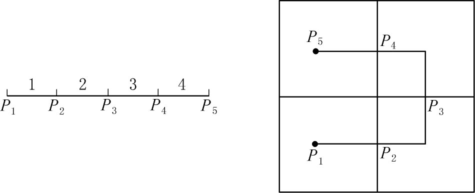
图42.4
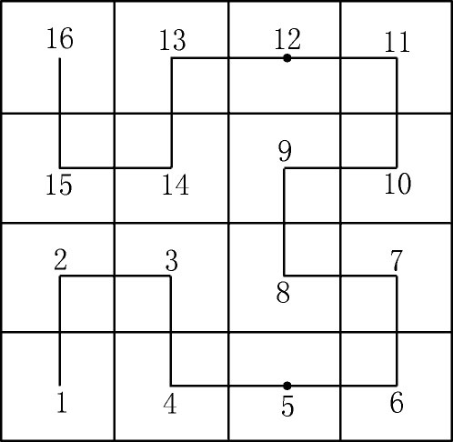
图42.5
我们继续这个过程，把每一个子正方形再分成四部分，给它们编号，使我们能够通过一条连续的路线跑遍整个集合。所要的曲线就是在每一步上相继形成的折线的极限。因为当细分继续进行下去时，子正方形以及单位线段的部分都收缩为一个点，所以我们能直观地看到单位线段上的每一个点映射到正方形上的一个点。事实上，如果我们固定单位线段上的一个点，比如说t＝2/3，那么这个点的像就是在相继形成的折线上t＝2/3的相继的像的极限。
这些例子说明若尔当提出的曲线的定义是不令人满意的，因为按照这个定义，一条曲线能填满一个正方形。一条曲线究竟意指什么的问题依然没有解决。1898年克莱因注意到(30)，没有什么东西比曲线的定义更含糊的了。这个问题是由拓扑学家接手研究的（第50章第2节）。
除了一条曲线究竟意指什么这个问题以外，把分析扩展到没有导数的函数也产生了这样一个问题，即一条曲线的长度究竟意指什么？通常的计算公式
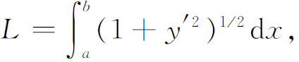
其中y＝f（x），至少需要导数存在。因此这个概念不再能用于不可微的函数。杜波依斯-雷蒙、皮亚诺、谢弗（Ludwig Scheeffer，1859—1885）和若尔当作出了各种努力去推广曲线长度的概念，他们或者使用推广了的积分定义，或者使用推广了的几何概念。最一般的定义是用测度的概念系统地陈述的，我们将在第44章中考察这个概念。
对于曲面面积的概念，一个类似的困难也被注意到了。19世纪教科书中所欣赏的概念，是在曲面上内接一个三角形面的多面体。当三角形的边长趋向于0时，它们的面积的和的极限就取成曲面的面积。用分析的话来说，如果曲面是由
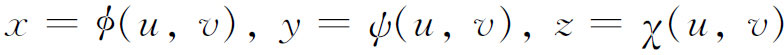
给出的，那么曲面面积的公式就是
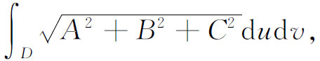
其中A，B和C分别是y和z，x和z，x和y的雅可比行列式。但是问题又出现了：如果x，y和z没有导数，这个定义又应是什么样子呢？为了把情况搞得更复杂些，施瓦茨在给埃尔米特的信中作出了一个例子(31)，其中甚至对于任何一个普通的圆柱面，都可以选择三角形使得曲面面积成为无穷大(32)。曲面面积的理论也是通过测度的概念重新进行考虑的。
在1900年左右，还没有一个人证明用若尔当和皮亚诺的定义的每一条闭的平面曲线围住一块面积。科赫（Helge von Koch，1870—1924）(33)作出了一条连续但不可微、周长为无穷大但围住一块有限面积的曲线，使面积问题变复杂了。从边长为3s的等边三角形ABC开始（图42.6）。在每一边的居中的三分之一段上作一个边长为s的等边三角形，并把每一个三角形的底边抹掉。这样的三角形就有3个。然后在新的图形中，在长为s的每一条在外部的线段上，在它的居中的三分之一段上作一个边长为s/3的等边三角形。然后把每一个三角形的底边抹掉。这种三角形将有12个。然后在得到的图形的外部线段上，作一个边长为s/9的等边三角形。这样的三角形有48个。依次得到的图形的周长是9s，12s，16s，…，因而这些周长变为无穷大。然而极限图形的面积却是有限的。因为，由众所周知的等边三角形的（用边长表示的）面积公式，即如果边长是b，面积就是
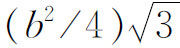
，因此原三角形的面积是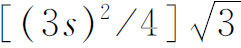
。第一次得到的3个三角形增加的面积是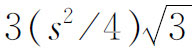
。因为下一次增加的三角形的边长是s/3，且数目是12个，所以增加的面积是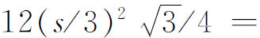
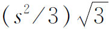
。于是面积的和等于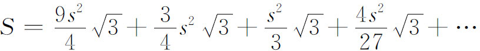
这是一个无穷的几何级数（第一项除外），公比是4/9。所以
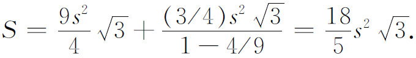
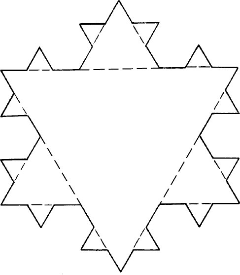
图42.6
皮亚诺曲线和希尔伯特曲线也产生了这样一个问题，即我们所说的维数究竟是什么？正方形本身是二维的，但是当它作为一条曲线的连续的像的时候，它就应该是一维的了。此外，康托尔曾经证明，一条线段上的点能够和正方形的点建立一一对应（第41章第7节）。虽然这不是连续地从线段到正方形的对应，或者其他的什么方法，但它确实证明了维数不是点的多少的事情。它也不是为了固定点的位置而需用的坐标个数（如同黎曼和亥姆霍兹曾想过的那样），因为皮亚诺曲线对每一个t值，指定唯一的（x，y）。
这些困难使我们看到，几何的严密化确实还没有回答所有出现的问题。许多问题是由下一个世纪的拓扑学家和分析学家解决的。围绕着基本概念的问题不断出现，这一事实本身再一次说明，数学不是像一个逻辑结构那样发展的。步入新的领域，甚至完善化旧的领域，都揭示出一些新的不容怀疑的缺陷。除了曲线和曲面问题的解决之外，我们还需要看见，通过分析的基础工作（即实数系）以及几何的基础工作，严密性的最后阶段是否已经达到了。
参考书目
Becker，Oskar：Grundlagen der Mathematik in geschichtlicher Entwicklung，Karl Alber，1954，199-212．
Enriques，Federigo：“Prinzipien der Geometrie，”Encyk．der Math．Wiss．，B．G．Teubner，1907-1910，ⅢAB1，1-129．
Hilbert，David：Grundlagen der Geometrie，7th ed．，B．G．Teubner，1930．
Pasch，M．and M．Dehn：Vorlesungen über neuere Geometrie，2nd ed．，Julius Springer，1926，185-271．
Peano，Giuseppe：Opere scelte，3 vols．，Edizioni Cremonese，1957-1959．
Reichardt，Hans：C．F．Gauss，Leben und Werke，Haude und Spenersche，1960，111-150．
Schmidt，Arnold：“Zu Hilberts Grundlegung der Geometrie，”见希尔伯特的Gesammelte Abhandlungen，2，404-414。
Singh，A．N．：“The Theory and Construction of Non-Differentiable Functions，”见E．W．Hobson：Squaring the Circle and Other Monographs，Chelsea（reprint），1953。
————————————————————
(1) Werke，8，222．
(2) Werke，8，196．
(3) Werke，8，193-195和200。
(4) Ann．de Math．，9，1818/1819，1．
(5) I Principii di geometria，Fratelli Bocca，Torino，1889＝Opere scelte，2，56-91．
(6) Memoric della Reale Accademia delle Scienze di Torino，（2），48，1899，1-62．
(7) Amer．Math．Soc．Trans．，3，1902，142-158．
(8) Math．Ann．，55，1902，265-292．
(9) Cambridge University Press，1960．
(10) Amer．Jour．of Math．，30，1908，347-378．
(11) Rivista di Matematica 4，1894，51-90＝Opere scelte，3，115-157．
(12) Monist，9，1898，p．38．
(13) 严格说来，他用了较有限的实数集。
(14) Amer．Math．Soc．Trans．，5，1904，343-384．
(15) Amer．Math．Soc．Trans．，3，1902，264-279．
(16) 1904，pp．212-247．
(17) Annals of Math．，（2），18，1916/1917，31-44．
(18) Math．Ann．，61，1905，173-184．
(19) Math．Ann．，53，1900，404-439．
(20) Math．Ann．，55，1902，465-478．
(21) Cours d'analyse，1887年第1版，第3卷第593页；1893年第2版，第1卷第90页。
(22) 第1版第593页；第2版第98页。
(23) Amer．Math．Soc．Trans．，6，1905，83-98，和14，1913，65-72．
(24) Math．Ann．，36，1890，157-160＝Opere scelte，1，110-115．
(25) Jour．für Math．，86，1879，263-268．
(26) Jahres．der Deut．Math．-Verein．，82，1900，121-125．
(27) Amer．Math．Soc．Trans．，1，1900，72-90．
(28) Bull．des Sci．Math．，（2），21，1897，257-266．
(29) Math．Ann．，38，1891，459-460＝Ges．Abh．，3，1-2．
(30) Math．Ann．，50，1898，586．
(31) Ges．Math．Abh．，2，pp．309-311．
(32) 这个例子可以在皮尔庞特（James Pierpont）的The Theory of Functions of Real Variables（Dover 1959年重印，第2卷第26页）中找到。
(33) Acta Math．，30，1906，145-176．